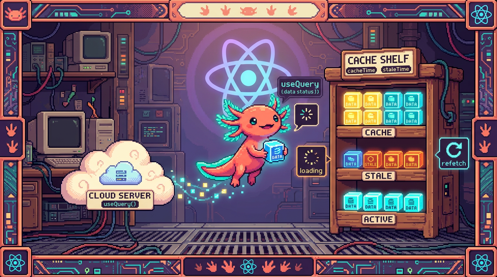

Capítulo 11 — Datos del servidor con TanStack Query

Hasta ahora tus datos vivían dentro del navegador: un
useStatecon un contador, una lista de tareas que escribías a mano. En este capítulo das un paso más: vas a aprender a traer datos que viven en otro sitio (un servidor, una base de datos) y a mostrarlos en pantalla sin perder la cabeza por el camino. La herramienta para eso se llama TanStack Query, y es exactamente la que usa RachaSimple con Supabase. Lo veremos término a término, con calma. Bit, nuestro ajolote, ya tiene la red lista para pescar datos en el río del servidor.
1. El problema: el estado del servidor no es como el estado local
En el Capítulo 04 aprendiste useState. Allí el dato es tuyo: lo creas, lo cambias, lo
borras. Si pones el contador en 5, vale 5 hasta que tú decidas otra cosa. Nadie más lo toca.
Los datos de RachaSimple no funcionan así. La lista de hábitos del usuario vive en Supabase, una base de datos que está en internet. Ese dato no es solo tuyo: puede cambiar desde otro dispositivo, puede tardar en llegar, puede caerse la conexión, puede quedar viejo mientras lo miras. Es un tipo de estado distinto, y tiene su propio nombre.
🟦 ¿Qué significa? — Estado del servidor (server state)
Es la información que no vive en tu navegador, sino en un servidor o base de datos remota (como Supabase). Sirve para guardar datos que deben sobrevivir aunque cierres la página y que pueden compartirse entre dispositivos. En RachaSimple, los hábitos y los registros diarios (check-ins) son estado del servidor: están en Supabase, no en la memoria del navegador.
Compáralo con lo que ya conoces.
🟦 ¿Qué significa? — Estado local (local state)
Es la información que vive dentro de tu componente, en la memoria del navegador, y desaparece al recargar la página. Sirve para cosas pasajeras de la interfaz: si un menú está abierto, qué texto hay en un input, qué pestaña está activa. Lo manejas con
useState. En RachaSimple, "¿está abierto el modal para crear un hábito?" es estado local.
La diferencia clave está aquí: el estado local lo controlas tú; el del servidor solo lo copias para mirarlo, y esa copia se te puede quedar atrás. Manejar todo eso a mano —pedir, esperar, guardar, refrescar, atender los errores— es un montón de trabajo que se repite una y otra vez. De ahí que exista una herramienta dedicada a ello.
🟦 ¿Qué significa? — TanStack Query
Es una librería (código que instalas y reutilizas) especializada en manejar estado del servidor en React. Sirve para pedir datos, guardarlos en una caché, saber si están cargando o si fallaron, y refrescarlos cuando hace falta, todo sin que escribas esa fontanería a mano. Antes se llamaba "React Query"; hoy su nombre oficial es TanStack Query. RachaSimple la usa para hablar con Supabase, y Faro también la incluye en su stack.
💡 Tip
No mezcles los dos mundos. Un error de principiante es guardar la lista de hábitos en un
useStatey actualizarla a mano. Si el dato viene del servidor, deja que TanStack Query lo maneje; reservauseStatepara lo que es puramente de la interfaz.
2. La caché: la libreta donde se guardan los datos
Antes de escribir código conviene entender una palabra que va a aparecer durante todo el capítulo.
🟦 ¿Qué significa? — Caché (cache)
Es una memoria temporal donde TanStack Query guarda los datos que ya pidió, para no tener que pedirlos otra vez si los necesitas pronto. Sirve para que la app vaya rápida: si dos pantallas de RachaSimple necesitan la lista de hábitos, se pide una vez y ambas leen la misma copia guardada. Piensa en la caché como una libreta donde apuntas lo que ya averiguaste para no volver a preguntar.
Para que esa libreta funcione hace falta una pieza que la administre y que esté disponible en toda la app.
🟦 ¿Qué significa? — QueryClient
Es el objeto central de TanStack Query: la libreta de la caché en persona. Guarda todos los datos, sabe cuáles están viejos y coordina las peticiones. Sirve como cerebro único para toda la app. Se crea una sola vez al arrancar el programa.
¿Y cómo hacen todos los componentes para usar esa misma libreta? Con un envoltorio.
🟦 ¿Qué significa? — QueryClientProvider
Es un componente envoltorio que pones lo más arriba posible de tu app y que reparte el
QueryClienta todos los componentes de dentro. Sirve para que cualquier componente, por hondo que esté, pueda usar la misma caché. Es el mismo patrón "provider" que viste con el contexto: envuelves la app una vez y todo lo de dentro queda conectado.
Así se ve esta configuración en la raíz de una app como RachaSimple:
import { QueryClient, QueryClientProvider } from "@tanstack/react-query";
// 1. Creamos el cerebro/libreta una sola vez.
const queryClient = new QueryClient();
function App() {
return (
// 2. Envolvemos toda la app para repartir esa libreta.
<QueryClientProvider client={queryClient}>
<Rutas />
</QueryClientProvider>
);
}
🔎 En tu código
En RachaSimple este montaje suele estar en
src/App.tsxo ensrc/main.tsx. Búscalo: es la primera vez en toda la app que apareceQueryClientProvider, y casi siempre envuelve también al provider del router y al de la sesión de Supabase. Si no existiera, ningúnuseQueryfuncionaría: daría un error diciendo que no encuentra unQueryClient.
3. Leer datos: useQuery
Ahora sí, el hook estrella para traer datos.
🟦 ¿Qué significa? — useQuery
Es el hook de TanStack Query que sirve para leer (traer) datos del servidor. Tú le dices qué datos quieres y cómo pedirlos, y él se encarga de pedirlos, guardarlos en la caché y avisarte mientras carga o si falla. En RachaSimple, el hook que trae la lista de hábitos usa
useQuerypor dentro.
A useQuery tienes que darle dos cosas, y cada una tiene nombre propio. La primera es la etiqueta
del dato.
🟦 ¿Qué significa? — queryKey
Es la etiqueta única que le pones a un dato en la caché, escrita como un arreglo (por ejemplo
["habits"]). Sirve para que TanStack Query sepa quién es quién en su libreta: dos componentes que usen la mismaqueryKeycomparten el mismo dato guardado. En RachaSimple, la lista de hábitos podría tener laqueryKey["habits"]y los check-ins de un día["checkins", fecha].
La segunda es la función que de verdad va a buscar los datos.
🟦 ¿Qué significa? — queryFn (query function)
Es la función que trae los datos. TanStack Query la ejecuta cuando hace falta refrescar. Debe devolver una promesa (algo que tarda y luego se resuelve, como aprendiste en el módulo de JavaScript). Sirve para encerrar la llamada real al servidor. En RachaSimple, la
queryFnes la que llama a Supabase para pedir las filas de la tabla de hábitos.
Juntemos las dos piezas en un hook real de RachaSimple:
import { useQuery } from "@tanstack/react-query";
import { supabase } from "@/lib/supabase";
export function useHabits() {
return useQuery({
queryKey: ["habits"], // la etiqueta del dato en la caché
queryFn: async () => {
// la función que de verdad pide los datos a Supabase
const { data, error } = await supabase
.from("habits")
.select("*")
.order("created_at", { ascending: true });
if (error) throw error; // si Supabase falla, lanzamos el error
return data; // si todo va bien, devolvemos las filas
},
});
}
Fíjate en cómo responde Supabase: te entrega data y error en el mismo objeto. Si hay error, lo
lanzamos con throw para que TanStack Query lo trate como un fallo; si no, devolvemos data, y
eso es lo que acabará llegando a tu componente.
⚠️ Cuidado — La
queryFndebe lanzar el errorSupabase no "explota" por su cuenta: te devuelve el error metido dentro de un objeto. Si olvidas el
if (error) throw error, TanStack Query creerá que todo salió bien ydatavaldránull. Elthrowes justo lo que conecta el fallo de Supabase con el manejo de errores de TanStack Query.💡 Tip
La
queryFnesasyncporque hablar con un servidor tarda. Elawaitespera a que Supabase responda. Si esto te suena borroso, repasa promesas yasync/awaiten el módulo 03; aquí son la base de todo.
4. Lo que devuelve useQuery: data, loading y error
useQuery no te devuelve solo los datos. Devuelve un objeto con varias piezas que describen en
qué punto va la petición. Estas tres son las que vas a usar siempre.
🟦 ¿Qué significa? — data
Es la propiedad donde llegan los datos ya cargados. Empieza valiendo
undefined(todavía no hay nada) y, cuando laqueryFntermina bien, pasa a contener lo que devolviste. En RachaSimple,datasería el arreglo de hábitos listo para pintar en pantalla.🟦 ¿Qué significa? — isLoading (estado de carga)
Es un valor
true/falseque valetruemientras la primera petición está en camino y aún no hay datos. Sirve para mostrar un mensaje de "Cargando..." o un esqueleto gris mientras llegan los datos. En RachaSimple, mientrasisLoadingestrue, la pantalla de hábitos muestra un spinner en vez de la lista vacía.🟦 ¿Qué significa? — isError y error
isErrores untrue/falseque valetruesi laqueryFnlanzó un fallo;errores el objeto con el detalle de ese fallo. Sirven para mostrarle al usuario un mensaje claro cuando algo sale mal (sin conexión, permiso denegado, etc.) en lugar de dejar la pantalla en blanco.
Estos tres estados se van turnando: primero cargando, y luego o bien datos o bien error, nunca a la vez. Tu componente los lee y decide qué pintar en cada caso. A esto se le llama manejar los estados de la petición:
function ListaHabitos() {
const { data, isLoading, isError, error } = useHabits();
// 1. Mientras carga, mostramos un aviso.
if (isLoading) {
return <p>Cargando hábitos...</p>;
}
// 2. Si falló, mostramos el error de forma amable.
if (isError) {
return <p>Algo salió mal: {error.message}</p>;
}
// 3. Si llegamos aquí, hay datos seguros: los pintamos.
return (
<ul>
{data.map((habito) => (
<li key={habito.id}>{habito.name}</li>
))}
</ul>
);
}
Ese orden —isLoading primero, isError después y los datos al final— es un patrón que verás
repetido en RachaSimple y en Faro. Se llama renderizado por estados, y te ahorra disgustos.
⚠️ Cuidado — No leas
dataantes de comprobar la cargaSi intentas hacer
data.map(...)mientras la petición aún carga,dataseráundefinedy la app reventará con "cannot read map of undefined". Por eso losif (isLoading)eif (isError)van antes: cuando llegas alreturnfinal, ya tienes la garantía de quedataexiste.🔎 En tu código
En RachaSimple, un componente como
HabitsList.tsxcasi nunca toca Supabase directamente. Llama auseHabits()(que por dentro usauseQuery) y se limita a leerdata,isLoadingeisError. Esa separación —el hook trae, el componente pinta— es exactamente lo que viste con los hooks personalizados en el Capítulo 09.💡 Tip —
isLoadingvsisPendingvsisFetchingEn versiones recientes de TanStack Query verás también
isPending(no hay datos todavía) eisFetching(hay una petición en marcha, aunque ya tengas datos viejos en pantalla). Para empezar, quédate conisLoadingpara la primera carga; los otros los entenderás solos cuando los necesites.
5. Datos viejos: staleTime y por qué TanStack refresca solo
Recuerda lo que decíamos: la copia que tienes en la caché se puede quedar vieja. TanStack Query lo sabe y, por defecto, vuelve a pedir los datos en ciertos momentos (por ejemplo, cuando regresas a la pestaña del navegador). Para hablar de esto necesitamos un término más.
🟦 ¿Qué significa? — Dato obsoleto (stale)
Un dato es stale ("rancio", "viejo") cuando ya pasó suficiente tiempo desde que se pidió como para sospechar que en el servidor pudo cambiar. No es que esté mal: es que conviene volver a comprobarlo. TanStack Query refresca en segundo plano los datos stale para mantener la pantalla al día.
🟦 ¿Qué significa? — staleTime
Es el tiempo que un dato se considera fresco antes de volverse stale, medido en milisegundos. Sirve para controlar con qué frecuencia se refresca: un
staleTimealto = menos peticiones (datos que cambian poco); uno bajo o cero = se refresca casi siempre (datos que cambian a cada rato). Se configura en eluseQueryo en elQueryClient.
useQuery({
queryKey: ["habits"],
queryFn: traerHabitos,
staleTime: 1000 * 60, // un minuto fresco antes de volverse stale
});
💡 Tip
No te obsesiones con
staleTimeal principio. El valor por defecto funciona bien para casi todo. Ajústalo solo cuando notes que la app pide datos demasiado seguido (sube elstaleTime) o que muestra datos viejos demasiado tiempo (bájalo).
6. Escribir datos: useMutation
useQuery solo lee. Para cambiar datos en el servidor —crear un hábito, marcar un check-in,
borrar algo— hace falta otro hook.
🟦 ¿Qué significa? — Mutación (mutation)
Es cualquier acción que modifica datos en el servidor: crear, actualizar o borrar. La palabra viene de "mutar", cambiar. A diferencia de una lectura, una mutación tiene efectos: deja el servidor distinto de como estaba.
🟦 ¿Qué significa? — useMutation
Es el hook de TanStack Query para hacer mutaciones (crear/editar/borrar). A diferencia de
useQuery, no se dispara solo: lo ejecutas tú cuando ocurre algo, normalmente al pulsar un botón. Te da una funciónmutatepara disparar la acción y sus propios estados de carga y error. En RachaSimple, crear un hábito nuevo o marcar el día como cumplido se hace conuseMutation.🟦 ¿Qué significa? — mutationFn (mutation function)
Es la función que ejecuta el cambio en el servidor. Recibe los datos nuevos y los manda a Supabase. Es la prima de la
queryFn, pero en vez de leer, escribe. En RachaSimple, lamutationFnde crear hábito hace uninserten la tablahabits.
Veámoslo creando un hábito en RachaSimple:
import { useMutation } from "@tanstack/react-query";
import { supabase } from "@/lib/supabase";
function FormularioNuevoHabito() {
const crearHabito = useMutation({
// la función que escribe en Supabase
mutationFn: async (nombre: string) => {
const { data, error } = await supabase
.from("habits")
.insert({ name: nombre })
.select()
.single();
if (error) throw error;
return data;
},
});
return (
<button
disabled={crearHabito.isPending} // se desactiva mientras guarda
onClick={() => crearHabito.mutate("Beber agua")}
>
{crearHabito.isPending ? "Guardando..." : "Crear hábito"}
</button>
);
}
🟦 ¿Qué significa? — mutate
Es la función que dispara la mutación. La llamas tú —por ejemplo dentro de un
onClick— y le pasas los datos que quieres mandar. En el ejemplo,crearHabito.mutate("Beber agua")manda ese nombre a lamutationFn. Hasta que no llamesmutate, no pasa nada.⚠️ Cuidado —
useMutationno se ejecuta al renderizar
useQuerypide datos en cuanto el componente aparece.useMutation, no: solo deja la herramienta preparada. El cambio ocurre cuando tú llamasmutate. Aquí es fácil tropezar: si esperas que elinsertocurra solo, nunca va a suceder.💡 Tip — Desactiva el botón mientras guarda
useMutationtambién te daisPending(mientras el cambio está en camino). Úsalo para ponerdisableden el botón y evitar que el usuario lo pulse dos veces y cree el hábito duplicado.
7. El problema después de mutar: la caché quedó vieja
Imagina que acabas de crear "Beber agua" con la mutación. Funcionó: ya está en Supabase. Pero la
lista que ves en pantalla la trajo useQuery antes, así que sigue mostrando la versión vieja,
sin el hábito nuevo. La caché y el servidor ya no coinciden.
Hay dos formas de arreglarlo, y cada una tiene nombre.
🟦 ¿Qué significa? — Invalidar la caché (invalidate)
Es marcar un dato de la caché como viejo para obligar a TanStack Query a volver a pedirlo. No borras nada: solo dices "esto ya no es de fiar, tráelo otra vez". Es la forma más segura de mantener la pantalla sincronizada después de una mutación. Se hace con
queryClient.invalidateQueries.🟦 ¿Qué significa? — invalidateQueries
Es el método del
QueryClientque invalida una o variasqueryKey. Le pasas la etiqueta del dato que cambió y él vuelve a ejecutar suqueryFn, refrescando la pantalla con los datos nuevos. En RachaSimple, tras crear un hábito se invalida["habits"]para que la lista se recargue ya con el hábito nuevo dentro.
Para usarlo necesitas una forma de alcanzar el QueryClient desde dentro de un componente.
🟦 ¿Qué significa? — useQueryClient
Es el hook que te entrega el
QueryClientque repartió elQueryClientProvider. Sirve para poder invalidar o tocar la caché desde cualquier componente. Lo llamas arriba del componente y guardas el resultado en una variable.
Juntándolo todo, así queda el flujo completo de "crear y refrescar" en RachaSimple:
import { useMutation, useQueryClient } from "@tanstack/react-query";
import { supabase } from "@/lib/supabase";
function FormularioNuevoHabito() {
const queryClient = useQueryClient(); // alcanzamos la libreta/caché
const crearHabito = useMutation({
mutationFn: async (nombre: string) => {
const { data, error } = await supabase
.from("habits")
.insert({ name: nombre })
.select()
.single();
if (error) throw error;
return data;
},
// cuando la mutación termina bien, refrescamos la lista
onSuccess: () => {
queryClient.invalidateQueries({ queryKey: ["habits"] });
},
});
return (
<button onClick={() => crearHabito.mutate("Beber agua")}>
Crear hábito
</button>
);
}
🟦 ¿Qué significa? — onSuccess
Es una función que TanStack Query ejecuta solo si la mutación salió bien. Sirve para hacer cosas "después de": cerrar un modal, mostrar un mensaje de éxito o, lo más típico, invalidar la caché para refrescar la pantalla. Es el lugar natural para poner el
invalidateQueries.
La segunda forma de refrescar es pedir los datos otra vez a mano.
🟦 ¿Qué significa? — refetch (refrescar)
Es volver a ejecutar la
queryFna propósito para traer datos frescos.useQueryte da una funciónrefetchque puedes llamar, por ejemplo, en un botón de "Actualizar". MientrasinvalidateQueriesdice "esto está viejo, encárgate",refetchdice "tráelo ahora mismo".🔎 En tu código
Faro es un caso interesante: su filosofía es de refresco bajo demanda. El usuario pulsa "Analizar proyecto" y ahí se dispara el trabajo, no antes. Ese patrón encaja como anillo al dedo con
useMutation(la acción que el usuario lanza) seguido deinvalidateQueriesorefetchpara mostrar el resultado nuevo. Busca en Faro los botones de análisis: detrás casi siempre hay una mutación.💡 Tip — Invalidar es casi siempre la respuesta correcta
Como principiante, después de cualquier mutación que cambie datos, tu reflejo debe ser: "invalida la
queryKeyafectada enonSuccess". Con eso, el 90% de las veces la pantalla se queda sincronizada sin que pienses más.
8. Juntando el ciclo completo
Con todo lo anterior ya puedes seguir el ciclo de vida del estado del servidor en RachaSimple de principio a fin:
- La app arranca y
QueryClientProviderreparte la caché. - La pantalla de hábitos llama
useHabits(), que por dentro haceuseQueryconqueryKey: ["habits"]. Mientras llega la respuesta,isLoadingestruey se ve "Cargando...". - Supabase responde,
datase llena con los hábitos y se pintan en pantalla. La copia queda guardada en la caché bajo la etiqueta["habits"]. - El usuario crea un hábito nuevo: un
useMutationejecuta sumutationFn(uninserten Supabase). - En
onSuccess,invalidateQueries({ queryKey: ["habits"] })marca la lista como vieja. - TanStack Query vuelve a ejecutar la
queryFn, trae la lista actualizada y la pantalla se refresca con el hábito nuevo. Fin del ciclo.
Ese baile —leer, mostrar estados, mutar, invalidar, refrescar— es el corazón de cualquier app React que hable con un servidor. El día en que lo veas como algo natural, habrás domado el estado del servidor. Bit ya recogió su red llena de datos frescos y la pantalla brilla al día.
✅ Checklist — ¿ya domino esto?
- [ ] Explico con mis palabras la diferencia entre estado local y estado del servidor.
- [ ] Sé qué es la caché y por qué
QueryClientProviderva arriba de toda la app. - [ ] Uso
useQuerycon suqueryKeyy suqueryFnpara leer datos. - [ ] Manejo los estados
isLoading,isError/errorydataen el orden correcto. - [ ] Entiendo por qué hay que comprobar la carga antes de leer
data. - [ ] Sé que
useMutationsirve para escribir y que no se dispara hasta llamarmutate. - [ ] Después de una mutación, invalido la
queryKeyafectada enonSuccess. - [ ] Distingo entre
invalidateQueries(márcalo viejo) yrefetch(tráelo ahora). - [ ] Sé qué significa que un dato esté stale y para qué sirve
staleTime. - [ ] Reconozco este ciclo dentro de RachaSimple y entiendo el refresco bajo demanda de Faro.
🧪 Ejercicios
-
En papel. Haz dos columnas: "estado local" y "estado del servidor". Clasifica estas cosas de RachaSimple: el texto que el usuario escribe en el input de nuevo hábito; la lista de hábitos guardada en Supabase; si el menú lateral está abierto; los check-ins de hoy. Explica en una frase por qué cada una va donde la pusiste.
-
En papel. Dibuja la línea de tiempo de un
useQuery: marca en qué momentoisLoadingestrue, cuándo se llenadatay en qué punto podría aparecer unerror. Indica qué se ve en pantalla en cada tramo. -
💻 Escribe un hook
useHabits()conuseQueryque tengaqueryKey: ["habits"]y unaqueryFnque pida los hábitos a Supabase (puedes simular Supabase con una función que devuelva una promesa con datos de prueba). Asegúrate de hacerif (error) throw error. -
💻 Crea un componente
ListaHabitosque use ese hook y muestre, en este orden: "Cargando..." mientrasisLoading, un mensaje de error siisError, y la lista pintada condata.map(...)si todo va bien. Comprueba que nunca leesdataantes de tiempo. -
💻 Añade un
useMutationque cree un hábito nuevo. Pon un botón que llame amutatecon un nombre, y desactívalo (disabled) mientrasisPending. EnonSuccess, invalida laqueryKey["habits"]conuseQueryClienty comprueba que la lista se refresca sola. -
💻 (Reto) Cambia el
staleTimedeluseQuerya0y a1000 * 60(un minuto). Abre y cierra la pestaña del navegador y observa en qué casos vuelve a pedir datos. Escribe una frase explicando qué notaste y por qué.